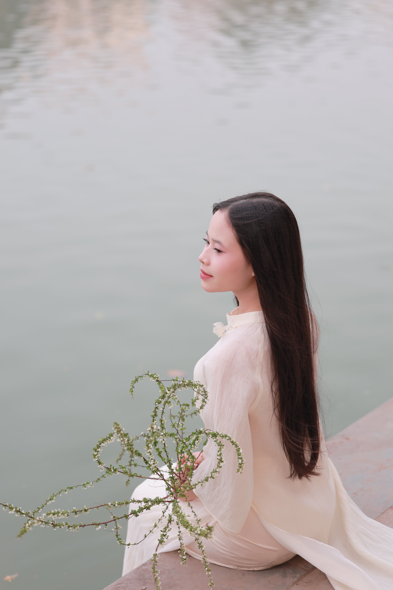
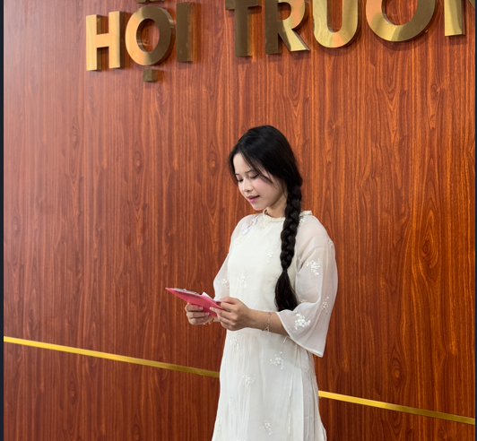
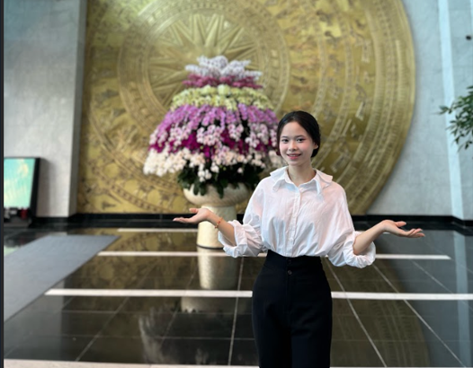
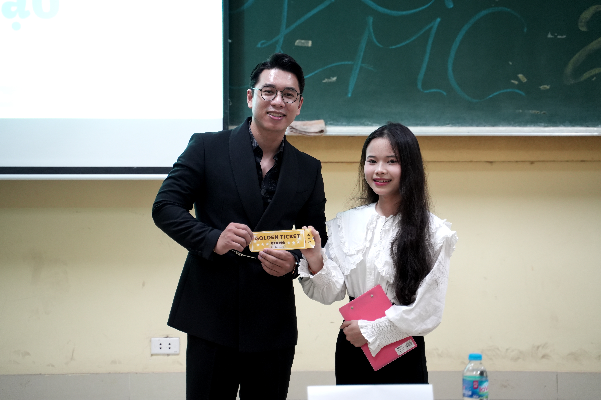
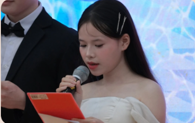

Xin chào! Mình là Nguyễn Anh Thư – hiện giữ vai trò Phó ban Chuyên môn tại CLB MC KMC. Với niềm đam mê sâu sắc dành cho nghệ thuật ngôn từ và sân khấu, mình luôn khao khát tạo nên những khoảnh khắc kết nối thông qua lời dẫn. Trải qua nhiều chương trình lớn nhỏ, mình không ngừng rèn luyện để trở thành phiên bản tự tin, bản lĩnh và truyền cảm hứng hơn mỗi ngày.

Xin chào!
Mình là Nguyễn Anh Thư – hiện đang giữ vị trí Phó ban Chuyên môn của CLB MC KMC. Là một người đam mê nghệ thuật dẫn chương trình, mình luôn tin rằng từng câu chữ, từng giai điệu cất lên không chỉ là lời nói, mà còn là cách mình kết nối cảm xúc với người nghe, truyền đi những giá trị tích cực và lan tỏa năng lượng yêu thương.
Bắt đầu hành trình tại KMC từ những ngày đầu còn nhiều bỡ ngỡ, mình từng là một MC nhỏ bé đứng sau hậu trường, hồi hộp trong lần đầu cầm mic. Nhưng nhờ sự hỗ trợ, động viên từ các anh chị và bạn bè trong CLB, mình dần trưởng thành qua từng chương trình, từng sân khấu. Đến nay, mình đã may mắn có cơ hội được dẫn dắt nhiều sự kiện lớn nhỏ, không chỉ trong CLB mà còn tại các chương trình ngoại khóa, sự kiện trường và liên kết bên ngoài.
Với mình, MC không chỉ là kỹ năng nói – đó là cả quá trình quan sát, lắng nghe, học hỏi và sáng tạo. Trong vai trò Phó ban Chuyên môn, mình không chỉ trau dồi kỹ năng cá nhân, mà còn mong muốn góp phần xây dựng môi trường học hỏi năng động cho các thành viên mới – nơi mỗi người đều có cơ hội thể hiện cá tính và phát triển phong cách dẫn riêng biệt.
MC trực tuyến buổi chia sẻ kinh nghiệm đạt điểm tối đa
MC trực tuyến buổi chia sẻ kinh nghiệm thực hiện các dự án khởi nghiệp
Tham gia phỏng vấn tại VTV đài truyền hình VN
Hội nghị NCKH sinh viên lần thứ 38
MC sinh nhật 4 tuổi KMC
MC Ngày hội toàn dân bảo vệ ANTTQ 2025
28/08/2006
Hà Nội